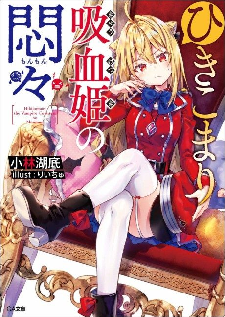

The Vexations of a Shut-In Vampire Princess
ひきこまり吸血姫の悶々
Komari, a shut-in vampire, is appointed commander of an army of violent soldiers.
We haven't found where the anime ends in the light novel yet.
7.0AniList score
—Animeter, no votes yet
12episodes
Rate it or report where you stopped
Anime finished. Where does the story go next?
StatusNo source yet
We looked for where the anime ends in the light novel but found no source we trust yet. The light novel is still running.
More like The Vexations of a Shut-In Vampire Princess
 Original8.3
Original8.3
 Done6.6
Done6.6
 Manga Ch. 819.1
Manga Ch. 819.1
 Manga Vol. 47.6
Manga Vol. 47.6
 Unclear6.4
Unclear6.4
 Unclear8.1
Unclear8.1
 Manga Vol. 117.8
Manga Vol. 117.8
 Manga Ch. 377.7
Manga Ch. 377.7
 Unclear7.6
Unclear7.6
 Unclear7.5
Unclear7.5
 Unclear6.8
Unclear6.8
 Original7.7
Original7.7